12.7x108mm NSV“悬崖”机枪组件箱 NSV_Crate_HMC
不可塑形仅配方原料 价值2000 质量34 护甲—/—/— 利钝—/—
HMC weapon pack – USSR · def自带→电力工业(前期) · Things/Item/Resource/WeaponCrate
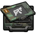
原料级·电力工业·冲锋枪零件 SMG_Component
不可塑形仅配方原料 价值150 质量1.20 护甲—/—/— 利钝—/—
Core_SK · def自带→电力工业(前期) · Things/Item/WeaponParts/SMGComponent
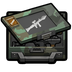
原料级·电力工业·发射器零件 Launcher_Component
不可塑形仅配方原料 价值750 质量2.20 护甲—/—/— 利钝—/—
Core_SK · def自带→电力工业(前期) · Things/Item/WeaponParts/LauncherComponent
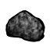
原料级·电力工业·块炼铁 IronBloom
不可塑形仅配方原料 价值1 质量2 护甲—/—/— 利钝—/—
Vile's Metallurgy · def自带→电力工业(前期) · Things/Item/Bloom
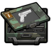
原料级·电力工业·手枪零件 Pistol_Component
不可塑形仅配方原料 价值50 质量1 护甲—/—/— 利钝—/—
Core_SK · def自带→电力工业(前期) · Things/Item/WeaponParts/PistolComponent
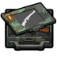
原料级·电力工业·步枪零件 Rifle_Component
不可塑形仅配方原料 价值200 质量1.30 护甲—/—/— 利钝—/—
Core_SK · def自带→电力工业(前期) · Things/Item/WeaponParts/RifleComponent
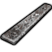
原料级·电力工业·渗碳钢 BlisterSteel
不可塑形仅配方原料 价值0.7 质量0.35 护甲—/—/— 利钝—/—
Vile's Metallurgy · def自带→电力工业(前期) · Things/Item/BSBillet
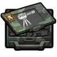
原料级·电力工业·火炮零件 Cannon_Component
不可塑形仅配方原料 价值600 质量2 护甲—/—/— 利钝—/—
Core_SK · def自带→电力工业(前期) · Things/Item/WeaponParts/CannonComponent
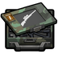
原料级·电力工业·狙击步枪零件 Sniper_Component
不可塑形仅配方原料 价值250 质量1.40 护甲—/—/— 利钝—/—
Core_SK · def自带→电力工业(前期) · Things/Item/WeaponParts/SniperComponent
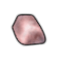
原料级·电力工业·生铁 PigIron
不可塑形仅配方原料 价值0.5 质量0.35 护甲—/—/— 利钝—/—
Vile's Metallurgy · def自带→电力工业(前期) · Things/Item/PigIron
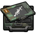
原料级·电力工业·重型武器零件 Heavy_Component
不可塑形仅配方原料 价值500 质量3 护甲—/—/— 利钝—/—
Core_SK · def自带→电力工业(前期) · Things/Item/WeaponParts/HeavyComponent

原料级·电力工业·钒钾铀矿 Uranium
不可塑形仅配方原料 价值10 质量0.40 护甲—/—/— 利钝—/—
游戏本体 Core · def自带→电力工业(前期) · Things/Item/Ores/Uranium
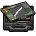
原料级·电力工业·霰弹枪零件 Shotgun_Component
不可塑形仅配方原料 价值150 质量1.30 护甲—/—/— 利钝—/—
Core_SK · def自带→电力工业(前期) · Things/Item/WeaponParts/ShotgunComponent